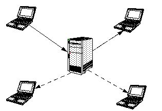
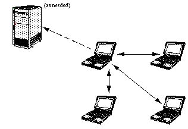

Distributed Architectures for Virtual Communities
An Electric Communities White Paper
Administering the Terms of Service (TOS) is critical for any online service. Generally, services monitor and enforce their TOS using a centralized organizational and technical framework, including strict client/server message routing infrastructure. While able to "get the job done", a traditional client/server system usually ends up overloading the server--not the ideal solution for upward-scaling user communities. Client/server systems cannot make the best use of available client resources, which can have a large amount of untapped memory, outgoing bandwidth, and processor power. In contrast, EC's distributed object communication system enables a secure peer-oriented communications model that most effectively facilitates a balanced division of labor.
Virtual communities provided via the Internet and online services have traditionally depended on a centralized server model for session management, routing, and security. Even MUDs and IRC, which did not initially have graphical client software, require a single machine-process to manage all message traffic.The result is a single server site that has responsibility for processing transactions; client sites exist as satellite systems interacting only with the server, not with each other.
As the online community grows, this client/server approach is neither very flexible nor scalable. Usually, the server is only able to handle a certain number of "hits", and soon becomes a bottleneck. As more users join the system, the server can overload. Even adding more servers does not solve the problem, as you will eventually hit an upper limit of processing power defined by current technology.
Using a peer-to-peer approach can alleviate this bottleneck. A peers model spreads the computing load over different machines, which can be servers for different functions. With its flexible architecture, the EC model of distributed communications is ideal for building these peers-based online systems.
Whatever the object relationship model, any online virtual community requires centralized administrative functions such as chat monitoring and message fanning to participant machines. These functions are natural benefits of the Client/Server architectures. However, this document demonstrates how these functions can actually be performed more efficiently through a peers model, enabled by the EC architecture.
The client/server and peers models
This section provides some background on and a comparison between the two models.
Client/server
Generally, most online services use a client/server communications model.With client/server, a client can only talk to a server, not directly to other clients.
FIGURE 1. Example of traditional client/server model. The server is responsible for all communications among clients, and must process all transactions.
 A traditional client/server model includes the following characteristics:
Clients do not communicate with each other. Rather, all messages are processed through the central server.
The dominant design paradigm is "Only Trust the Server". The server is the sole focal point for message authentication and processing. As a result, the clients tend to be untrustworthy as well as under-utilized.
Traditionally, this object model has tended to be the norm for distributed online systems. This is due in part to the instinctive tendency of designing a system to mirror how actual tasks are processed. Since administrative functions (typically access control, monitoring, and accounting) are centrally controlled, developers have usually made the technical infrastructure match this model. Accordingly, all messages are routed through the server and forwarded on to interested parties. This approach lets the service operator access messages to perform administration functions like performance tuning and monitoring.
However intuitive the client/server model might be, it does have severe scaling problems. In an online virtual community, the centralized server is both a communications bandwidth and processing bottleneck.
The peers model
In contrast, the peers model uses a different approach.
FIGURE 2. Example of a peers communication model. A machine can talk directly to other machines on the network, without having to go through a centralized server. However, it can still communicate with the server as needed.
 The peers model, easily enabled by the EC architecture, is much less constrained than client/server. In a peers model, machines on the network communicate directly with each other through a shared context. This is facilitated with current multiplex networks, particularly the Internet. Unlike client/server, there is no additional architectural requirement for a centralized server to process messages.
In the peers model, the distinction between client and server is pushed down into the objects which are actually communicating. This means that certain objects with critical state might have a server component for just that state, but communicate as peers for other states.This provides significant flexibility, letting you take advantage of the "functional specialization" of different objects. In particular, you can build a model where you have client and server objects, but with respect to particular operations.
Chat Monitoring
Most services use some sort of chat monitoring as a part of their TOS administration. Services often employ software agents and human monitors to help detect TOS violations such as swearing in a public chat-room, or inappropriate online contacts.
Whether you use centralized human monitoring or automatic filtering, monitoring in a client/server system incurs huge overhead costs.Using a peers model, in contrast, can make chat monitoring much less expensive.
Human monitoring
For large systems, complete coverage of all chats by live human moderators is neither technically possible nor socially feasible. At any moment, there are hundreds of thousands of chats going on (millions if you count e-mail). On the social/economic side, the cost of raw human monitoring of all traffic is demonstrably higher than the revenue potential.
The cost of chat monitoring using human moderators is demonstrated by this algorithm:
Total Live chat overhead = Monitoring cost + Problem resolution cost Monitoring cost = Traffic / Monitor scan rate * Compensation Problem resolution cost = Problems * Arbitrator clearance rate * Compensation Traffic = User load * Words per user hour User load = How many accounts are being monitored. Monitor scan rate = Average words reviewed per hour per monitor Problems = Problem rate * User load Problem Rate = Problems referred to arbitrator per user hour Monitor overhead = Time to transfer to a problem to an arbitrator Arbitrator clearance rate = Average problems cleared per hourTo illustrate, a sample number for AOL usage might easily be 5 million members (Note that AOL does not do 100% human monitoring).User load = 5,000,000 * 1% = 50,000 Revenue = 50,000 user-hours * $1.00/user-hour = $50,000/hr Traffic = 10 wpm, 600 wph * 50,000 users = 30,000,000 words/hour Monitor scan rate = 5000wph? Monitor compensation = $10/hr (includes overhead) Monitor cost = 30,000,000 wph / 5000 m-wph (6,000 monitors) * $10/hr = $60,000/hrNote that $60,000/hr for monitoring is a $10,000/hour loss, which is much too expensive. And this is even before considering the costs of problem arbitration and technical overhead.
Filtering software
To streamline the monitoring process, some services have developed filtering software that looks for patterns in communications, and notifies the monitors when possible TOS violations are detected. This can significantly reduce the amount of traffic requiring human monitoring to less than 1% of total traffic.
However, even though this has the desired effect of reducing the human monitors' load, the server is still reading each and every message as it comes through. The server needs to maintain a conversational window so monitors can interpret a potential TOS violation in it's original context. So the calculus is:
Room Chat Cache = Window size (messages) * Average message sizeAssume there are 20,000 chats, and a window is 100 lines:
80 character messages = 160 megs Message scanning process overhead = Users * Words/minute / Scan speed words/p-minuteUsing the AOL example, you have:
50,000 * 10wpm / 500,000? words/p-minute = 1 processor-minutes/minuteIn other words, an entire computer would be required just to scan chat messages. And note that this formula does not include any other message processing overhead, such as protocols or fanning.
Using the peers model to monitor chat
In contrast, using peer-to-peer communications is considerably cheaper to accomplish the centralized administrative function of effective human monitoring, and does not require paying the overhead of either 100% live operators or centralized software filters. Instead, you can install the filters on the individual participant machines, and have them communicate directly with each other. Only potential problems events are transmitted to the service operator.
For example, consider Figure 2 at the beginning of this document. The solid arrows represent chat messages between peers. Each peer keeps its own conversational window and applies the filtering software to others' messages. If a potential TOS violation is detected, the conversational window (AKA log) is sent to the service provider (via the dashed arrow) for the usual arbitration procedures to occur.
Using peer-base monitoring does raise issues not applicable to client/server models. First of all, it empowers customers to control their own experiences, but not those of other users. Users can disable monitoring on their local machines without requiring outside permission. In the absence of a central service provider providing comprehensive monitoring, people may willfully interact with each other in ways that violate the TOS, undetected.
Peers monitoring also has some costs that the client/server does not:
- Clients, not the server, now scan messages, at a considerably reduced rate:
~10 users * 10 wpm / 10,000? words/p-minute = .01 p-minute/minute- Clients now send messages directly to each other rather than through a central server, which multiplies output by 2 to ~10 times.
- There are also authentication costs for peers not associated in client/server model. In the peer model, communicating clients need to authenticate messages. This happens because a service provider must be certain that a conversational log is genuine (not forged), and thus needs to authenticate the messages contained within it. Service providers generally do this by using public/private keys. Each message contains a digital mark that was signed with the author's session private key (obtained from the service provider). Recipients of each message authenticate it using the same public key that the service provider would use to review the log.
However, the advantages to using peer relations far outweigh the drawbacks:
- No host 'conversational window' memory overhead.
- No host processor overhead for scanning.
- No host communications overhead at all for 99% of messages.
To achieve maximum efficiency, you can set up a peers model to work in conjunction with a central server. In this type of design, verifiable event logs are sent to the service provider only for a specific reason. Even if software agents are not used to filter communications, a simple 'panic button' in the local system could transfer the logs to the service. Likewise, servers could still perform random monitoring, joining the conversation as a peer, and using the same 'send log' command for archival record keeping.
Message Fanning
Message fanning is the process of sending a single message on to more than one recipient. Consider Figure 1 at the beginning of this document. The client in the upper left corner sends a message to the central sever, and it is fanned out to the other three clients. With all of the clients in a space generating messages simultaneously, the message traffic for the server is c2, where c is the number of clients generating messages in a context.
Outgoing Traffic = senders * (message rate + recipient overhead) * recipients senders = clients = recipients (in the central server fanning model)So for a full AOL chat room, the following algorithm applies:
23 * (80 bytes/minute + 20 bytes overhead) * 23 = 529k/minute/roomAssume there are 2000 full rooms:
2000 full rooms * ~.5meg/minute = ~ 1 gig/minute = ~ 20meg/second Client send traffic = 100 bytes/minute, or about 2 bytes/secondIn the peers case (Figure 2), a server is not required for message fanning (unless you really need it to, for critical messages such as "There is a new user arriving"). Chat traffic need not interact with the central host for fanning; the peer can do it itself.
The peers model uses the same traffic formula as the client/server model, with the following differences:
senders = 1 (the peer) recipients = clients - 1 (we trust ourselves)Therefore, for each peer in a chat room:
1 * (100 bytes) * 22 = 2200 bytes outgoing peer traffic/minute or < 40 bytes/second! Server send traffic = 0 bytes/secClearly, the increase (from 2 to 40 bytes/ second) in the peer outgoing traffic is well within performance capabilities of even today's slowest modems. In addition the savings to the service providers is tremendous--as much as several orders of magnitude.
In virtual communities, there are more kinds of communications than just chatting in a public room. For example, users also send private messages to each other. These private messages are sent over the wire along with public chat. Again, a peer model lets you bypass the bottleneck of a central server to send these messages. They can be directly routed to the particular parties, without bothering a host with transactions that are marked private. It is then up to the specific server provider to monitor these private-chats.
Multicasting
With fanning, one method of reducing message traffic is to use a multicasting protocol, such as the one provided on the Internet M-Bone. This allows a single message to include multiple recipients, and the fanning is done within the Internet routers.
M-Bone send traffic = (senders * message rate) + (recipient overhead * recipients) Centralized = 23 * 80 + 20 * 23 = 2300 b/min/room * 2k rooms = 4.6 m/min = 80k/secEven using client/server implementation, this is a considerable performance improvement for the system. Using peers with multicasting is even better:
1 * 80 + 20 * 22 = 520 bytes/min = 9 bytes/secHowever, M-Bone multicast is a broadcast model, implementing channels that particular listeners subscribe to. It requires central administration of channels; this significantly increases set-up, bandwidth management, and tear-down overhead.
Multicasting can help reduce message traffic, but is not a complete answer to the problem of message fanning overhead. Though multicast protocols are a performance boon for broadcasting, other message processing overhead is not included in these figures. Also, not all networks support multicast protocols, and the bandwidth on the M-Bone is already experiencing load problems. One way to look at multicast protocols is not that they solve the fanning problem for small messages, but trade the fanning problem for fatter messages, like video. The primary benefit of the multicast protocol is cancelled out by the problems of multimedia/broadcast.
Summary
Using a peers-based system to build an online virtual community avoids the bottleneck of a centralized server, even for the important administrative functions of chat monitoring and "fanning" messages to multiple users at once. EC's architecture facilitates building such a peers-based system. Using the EC model, it is easy to take advantage of the "functional specialization" of different objects. Objects can communicate as peers for a certain state, or as servers for others. This lets you spread the computing load over different machines, which can be servers for different functions.
For more information
To find out more about Electric Communities and the EC architecture, contact us at:
© 1996 Electric Communities
10101 North De Anza Boulevard, Suite 100
Cupertino, California 95014
(408) 342-9500
http://www.communities.comElectric Communities and the E logo are trademarks of Electric Communities. Use of the E logo for commercial purposes without the prior written consent of Electric Communities may constitute trademark infringement and unfair competition in violation of federal and state laws.
This document is copyrighted by Electric Communities with all rights reserved worldwide. Under copyright laws, this document may not be copied, in whole or in part, without the written consent of Electric Communities. Under the law, copying includes translating into another language.
Java(TM), and HotJava(TM) are trademarks of Sun Microsystems, Inc.